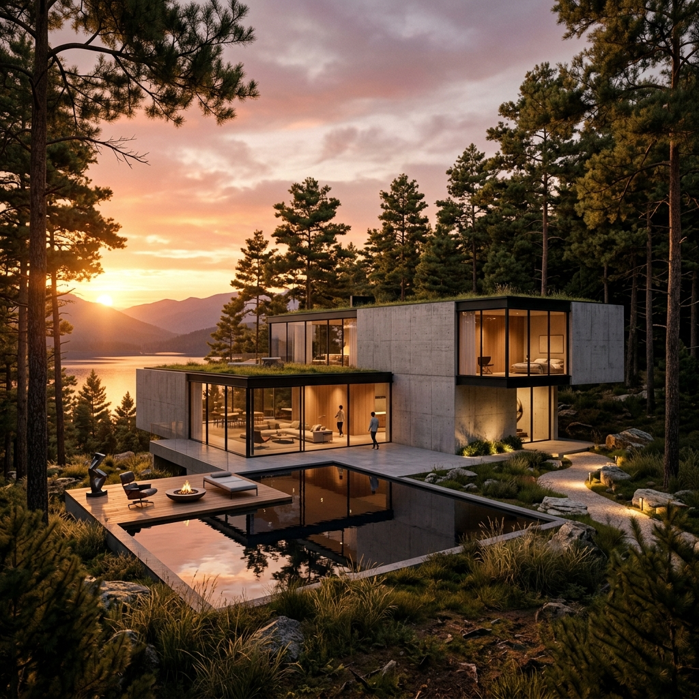
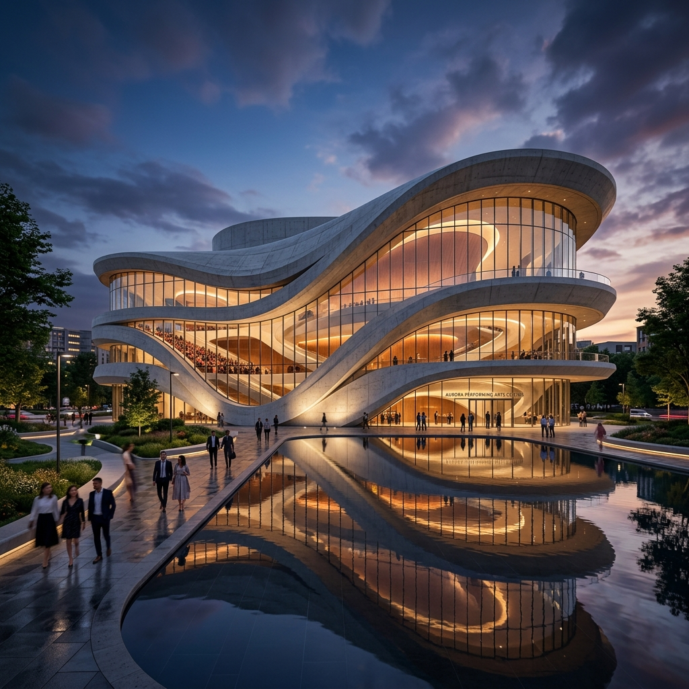
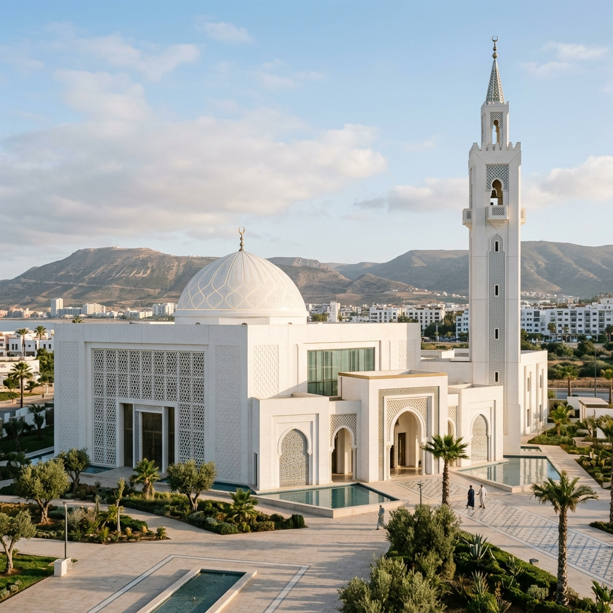
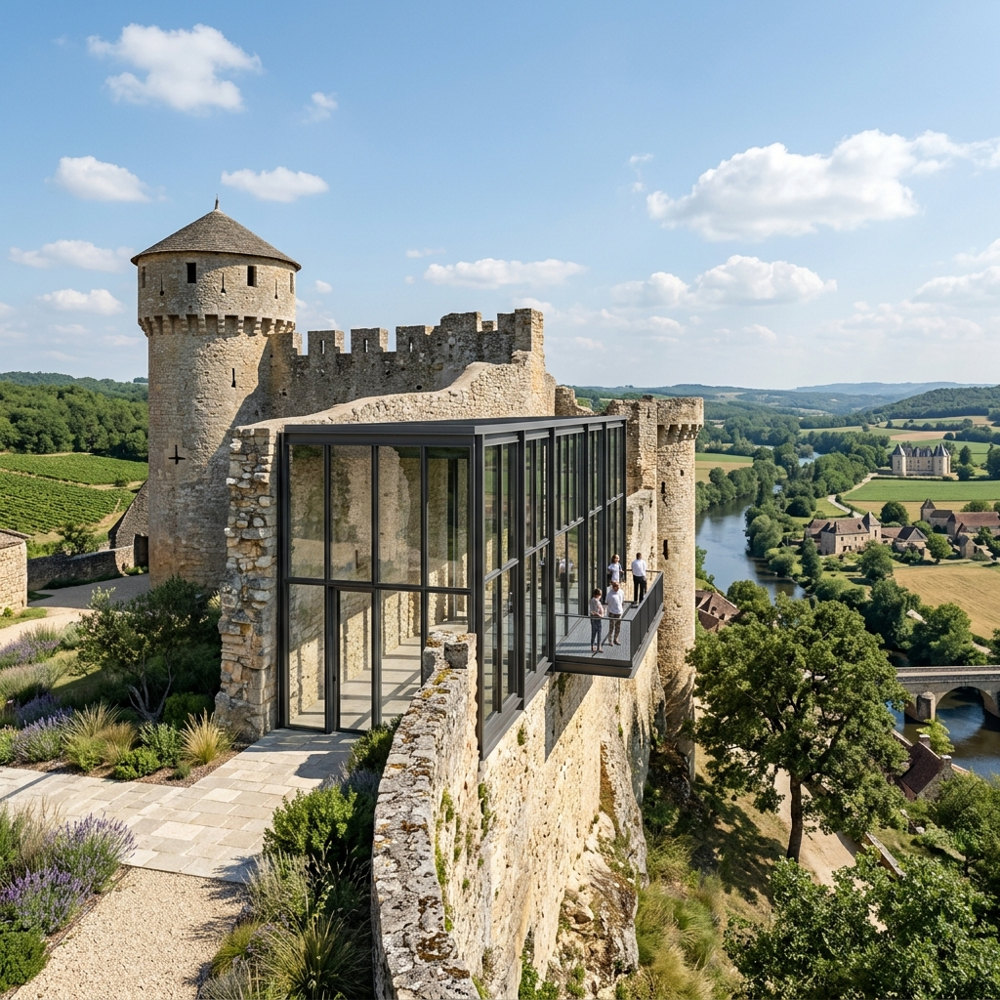
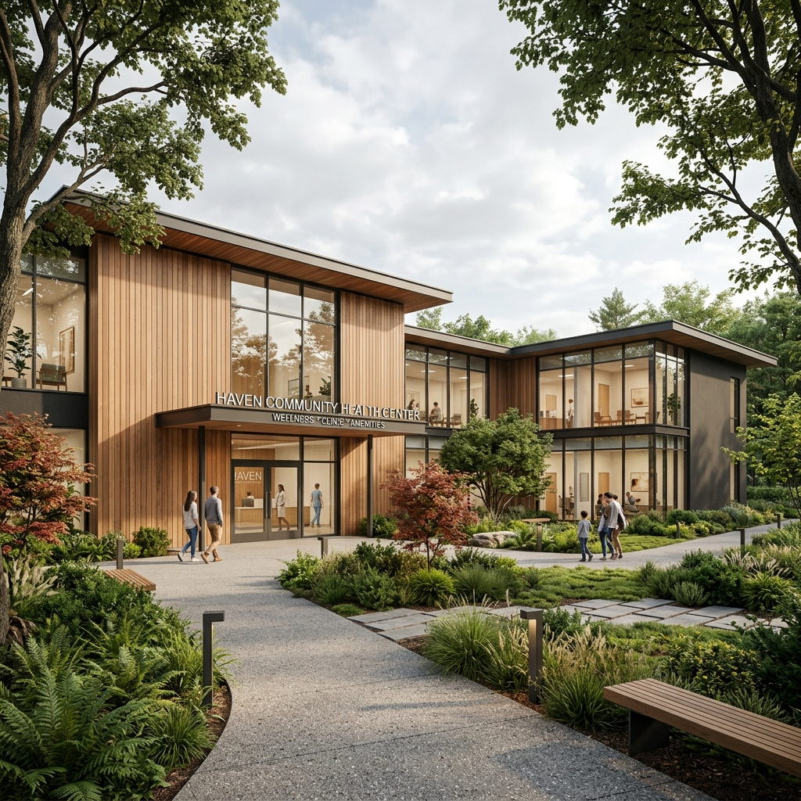
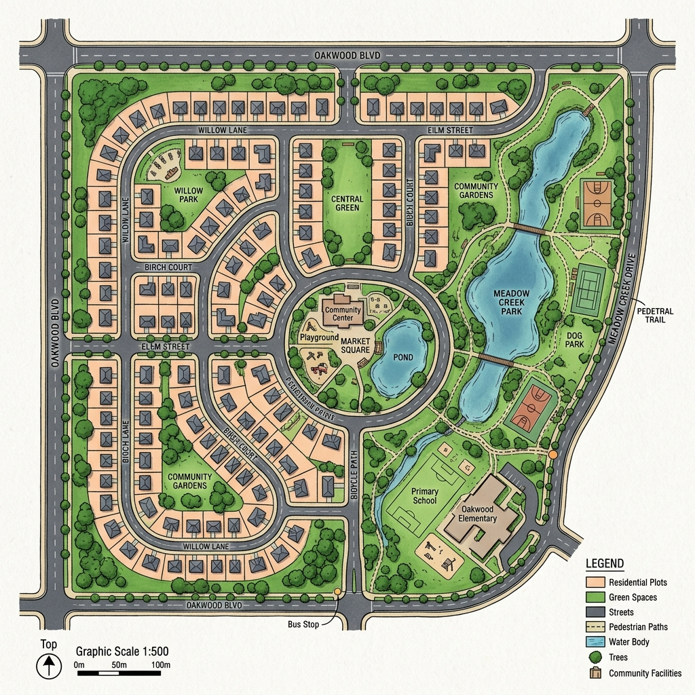

SCULPTER LA LUMIÈRE.
Futur architecte diplômé de l'École Nationale d'Architecture d'Agadir. Allier rationalité technique, respect du patrimoine et esthétique contemporaine.
Salah Eddine OUSSI
Étudiant Architecte (ENA Agadir)
Quartier Tilila, Agadir, Maroc
L'architecture comme équilibre entre forme, matière et héritage.
Riche de multiples expériences de stages en agence, en administration publique et sur chantier, je développe une sensibilité particulière pour l'architecture durable et la mise en valeur des identités locales.
Mon parcours à l'École Nationale d'Architecture d'Agadir m'a appris à appréhender le projet architectural dans sa globalité, depuis l'analyse territoriale et spatiale jusqu'au suivi de chantier et à la restauration du patrimoine historique.
Langues
- Arabe : Langue maternelle
- Français : Niveau C1 (Courant)
- Anglais : Niveau B2 (Technique)
- Espagnol : Niveau A1 (Notions)
Centres d'Intérêt
Outils & Maîtrise Technique
CAD & Modélisation 3D
Archicad, SketchUp
Rendu 3D & Animation
Lumion, Twinmotion
Post-Production & Design
Photoshop, Illustrator, InDesign
SIG & Analyse Spatiale
ArcMap (Système d'Information Géographique)
Travaux & Projets Clés





Expériences Professionnelles
Stage Professionnel
Al Omrane Souss MassaDépartement de Conception et Développement. Division des Études et de la Programmation. Suivi minutieux des travaux de construction du Grand Théâtre d'Agadir.
Stage en Administration Publique
La Commune Urbaine d'AgadirDivision d'Urbanisme et Département des Travaux et Études. Participation active à l'étude technique et sociale de la mise à niveau des quartiers sous-équipés.
Stage en Agence d'Architecture
Agence Irizi ArchitectureParticipation aux plans d'aménagement d'un ensemble de centres de santé régionaux. Conception architecturale d'une résidence bancaire et suivi régulier de chantier.
Stage Restauration de Rempart
Château Pontus de TyardApprentissage intensif et mise en pratique des techniques de restauration de maçonnerie historique et suivi strict des règles de conservation du patrimoine bâti.
Stage Chantier
Sté. Zerdkide ConstructionSuivi de travaux de gros œuvre sur le chantier de la Grande Mosquée de Hay Essalam, et des travaux résidentiels de la 2e tranche d'Agadir Bay.
Travaillons ensemble sur vos futurs projets.
N'hésitez pas à me joindre pour toute collaboration, opportunité de stage ou échange professionnel.